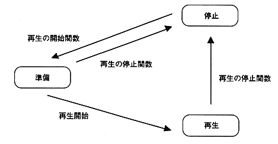

The MPEG system is controlled through the MPEG handle.
The MPEG handle holds the video operating status and audio operating status. The operating status changes as follows for both video and audio.
∙ Use the following functions to start and stop playback.
(a) Playback start function
(b) Playback stop function
- MPG_MvStop, MPG_MvStopVideo, MPG_MvStopAudio
- MPG_SpStop

Figure 4.3 MPEG handle state transition diagram